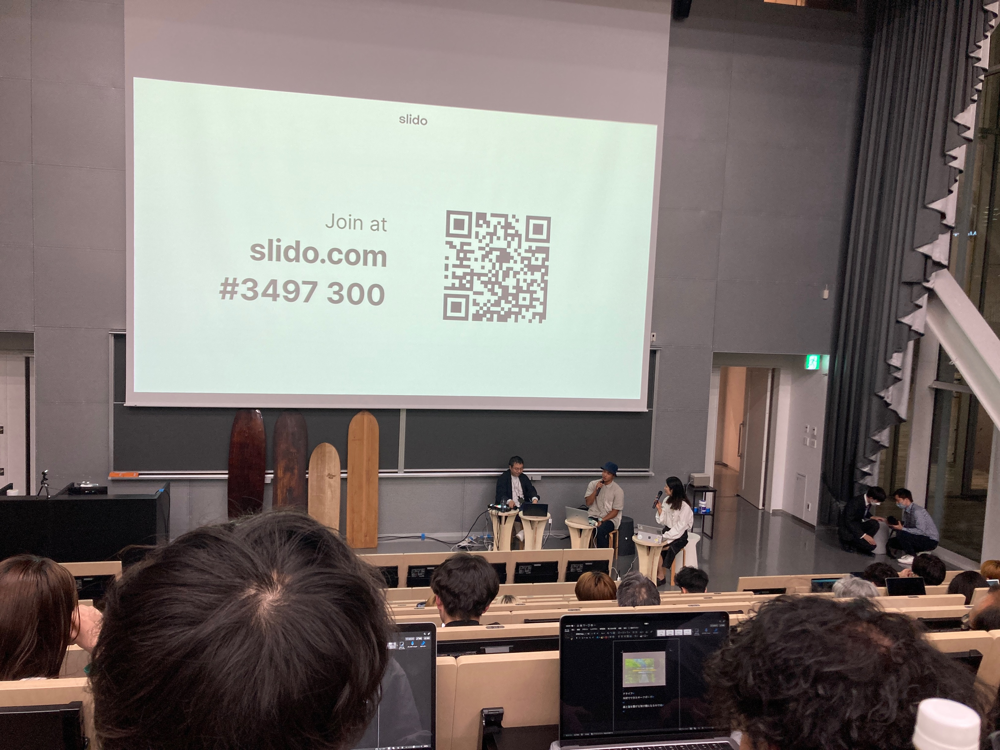

デザイン演習Ⅴ・Ⅵ
第四回
アライア
今回は神奈川大学卒業生でプロサーファーである石川拳大さんの講演会に参加素ました
ケンタさんの話はとてもエネルギッシュで引き込まれました。
アライアについて
サーフィンの原型と言われているもので、現代のものと違いフィンなどがついて
おらず、木だけで作られているシンプルなものです。
昔は移動手段として使われていてどんどんと進化したのが今のサーフボードです。
ケンタさんがなぜアライアに乗るのか、それは原点回帰を目指してアライアに乗っていました。
ケンタさんが子供の頃に波に初めて乗った時の感動をまた味わいたくて、始めていたのです。
そしてアライアに乗ることで普段何気無く生活している日常のありがたみを味わい思い出すことが出来るそうです。
この講演会で特に感動したのは楽しいこと、やりたいことにはどんどん自ら突き進むことの大切さを教えてもらえました。
